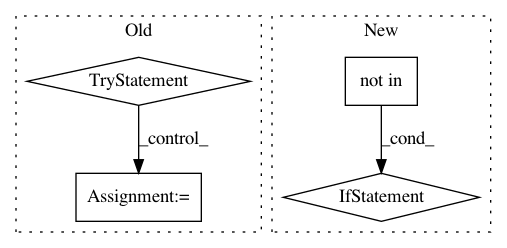

d7c95a4a9065cbad73901b4c1de087837e260316,python/ray/serve/api.py,Client,get_handle,#Client#Any#Any#,352
Before Change
routers = list(ray.get(self._controller.get_routers.remote()).values())
current_node_id = ray.get_runtime_context().node_id.hex()
try:
router_chosen = next(
filter(lambda r: get_node_id_for_actor(r) == current_node_id,
routers))
except StopIteration:
logger.warning(
f"When getting a handle for {endpoint_name}, Serve can"t find "
"a router on the same node. Serve will use a random router.")
router_chosen = random.choice(routers)
return RayServeHandle(
router_chosen,
endpoint_name,
)
After Change
self._controller.get_all_endpoints.remote()):
raise KeyError(f"Endpoint "{endpoint_name}" does not exist.")
if endpoint_name not in self._handle_cache:
handle = RayServeHandle(self._controller, endpoint_name, sync=True)
self._handle_cache[endpoint_name] = handle
return self._handle_cache[endpoint_name]
def start(detached: bool = False,
In pattern: SUPERPATTERN
Frequency: 3
Non-data size: 4
Instances
Project Name: ray-project/ray
Commit Name: d7c95a4a9065cbad73901b4c1de087837e260316
Time: 2020-11-17
Author: simon.mo@hey.com
File Name: python/ray/serve/api.py
Class Name: Client
Method Name: get_handle
Project Name: chainer/chainercv
Commit Name: 9cc2c91177a6456dea602a93b77864b0a7952333
Time: 2019-02-24
Author: ktns.87@gmail.com
File Name: chainercv/links/model/pickable_sequential_chain.py
Class Name: PickableSequentialChain
Method Name: pick
Project Name: tensorlayer/tensorlayer
Commit Name: dcc1d03f4b2a6c18aadb24152fef288df854a208
Time: 2018-05-22
Author: DEKHTIARJonathan@users.noreply.github.com
File Name: tensorlayer/__init__.py
Class Name:
Method Name: